AI Infra科普、入门或者进阶 ～～ 不到 5 万字，带你融会贯通理解大模型的数学、算法、硬件到系统工程。任何问题欢迎沟通交流。
"AI不需要脑子！本科生就能干！做AI最重要的特质就是靠谱"
--- 2026-05-11 姚顺宇（Google DeepMind / 前 Anthropic / 清华物理系特奖得主）
可怕，我竟然有点认同这句话。当然大概率是因为姚顺宇太懂AI了，而我则是因为无知者无畏。
不过仔细想想，大模型推理中的数学逻辑确实不复杂，很多原理只需要高中数学知识就能看懂。但是为什么像 vLLM 这种推理系统这么复杂呢？
本文将拆解大模型中几个核心操作（RMSNorm、Softmax、Causal Mask、Sampling）背后的数学与 Infra 优化逻辑。看完你会发现，Infra 优化，本质上就是在用数学上的等价变换，或者对精度的适度妥协，去换取更高的硬件利用率和极致的推理速度。
PS: 当然最核心的操作肯定是矩阵乘法，这个放到下一篇吧 《AI Infra入门：从矩阵乘法到FlashAttentionV4》～其他的还有RoPE和残差连接没有提及～
PS: to 已具备相关专业知识的读者，TL;DR放在最后了，可以直接划到最后阅读。
01
大语言模型（Transformer 结构）通常包含数十甚至上百个堆叠的隐藏层（如 Transformer 结构）。输入张量（Tensor）在经过连续的矩阵乘法和加法操作后，其数值的分布范围会发生剧烈的变化。
这种数值大小的不可控会导致两个严重的工程和算法问题：
算法收敛困难：数值变得过大或过小会影响训练的稳定性：极端数值要么会落入激活函数的饱和区导致梯度消失，要么会顺着网络不受控地放大引发梯度爆炸或硬件溢出。
硬件层面的溢出与截断：在当前主流的 GPU 推理和训练中，为了追求极致的吞吐，底层计算会在使用低精度浮点格式（如 FP16 或 BF16）。
对于 FP16，数值上限仅为 65504。如果未经处理的张量在层间传递时不断放大，容易突破数值上限，引发
NaN（Not a Number）或 Inf 溢出。 即FP16精度高，但是数值范围小。对于 BF16，虽然不容易溢出，但它的尾数极短（仅 7 bit）。如果数值方差过大、尺度不一，在做加法时容易导致截断误差（即四舍五入，引发“大数吃小数”的问题）。即BF16精度低，但是数值范围大。
这两者都会导致模型输出乱码或训练彻底崩溃。为了保证大模型在深层网络中的数值稳定性，研究人员在架构中引入了特征归一化（Normalization）机制（例如 LayerNorm、RMSNorm）。其核心目的，是在数据的层间传递过程中，对其数值分布进行强制的缩放与平移，将其约束在一个标准、安全的物理尺度内, 防止方差膨胀引发的溢出。
强行缩放和平移原始数据，不会破坏原有的特征信息吗？这其实是因为归一化有一个重要的底层前提：神经网络真正关心的并非数值的绝对大小，而是特征之间的相对差异。
而要对张量的数据分布进行量化约束，我们首先需要在数学上明确：如何精确衡量并计算一组数据的波动范围？
1.1 离散度
在很久以前，人们只用平均数来描述一组数据。然而，平均数存在一个显著的局限性：它无法反映数据内部的差异与真实的分布情况。举个例子：
城市 A 的气温：一年四季都是 20℃。（宜居）
城市 B 的气温：夏天 60℃（热死），冬天 -20℃（冻死）。
如果只算平均温度，两个城市都是 20℃，你会以为两个城市一样舒服。但实际上，城市 B 的气温波动非常剧烈。为了量化这种波动（偏离平均值的程度），数学家们决定发明一个新的指标：离散度。
1.2 方差
简单相加
如何计算波动呢？每天的温度减去平均温度，然后全部加起来？
城市 B 夏天：60−20=+40
城市 B 冬天：−20−20=−40
加起来算总波动：(+40)+(−40)=0
问题： 因为波动有高有低，正负值互相抵消了。算出来的总波动为 0？显然与事实不符。
绝对值
既然正负号会抵消，那最符合直觉的办法就是加绝对值。这就是平均绝对误差（MAD）。
夏天波动：∣60−20∣=40
冬天波动：∣−20−20∣=40
平均波动：(40+40)÷2=40。
这个指标挺好，完全符合人类直觉！但为什么最终没有使用呢？因为统计学需要大量用到微积分（求导数）来寻找误差的最小值（比如著名的最小二乘法）。绝对值的图像是一个 “V”字型，它在底部尖端处是不平滑的（不可导）。当想要通过求导来寻找最优解时，绝对值会是巨大的障碍。
平方
既然绝对值没法求导，那还有什么方法能把负数变成正数？平方！
夏天波动：(60−20) 2 =1600
冬天波动：(−20−20) 2 =1600
求平均：(1600+1600)÷2=1600。
是的，恭喜你发明了方差！因为平方函数的图像是一个平滑的“U”字型抛物线。抛物线求导数只需一秒钟（x 2 的导数是 2x）。由于在数学求导上的完美表现，方差（Variance）彻底统治了统计学。
大白话定义：方差，就是每个数据与平均值之间距离的平方的平均数。它衡量的是数据整体偏离中心的程度 - 离散程度。
方差的计算步骤：
求均值：先算出这组数据的平均值（记作 μ）。
求偏差：把每个数据都减去平均值，看看每个数据偏离中心多远（即 x i −μ）。
平方（消负号并放大误差）：把算出来的每一个偏差求平方（即 (x i −μ ) 2 ）。
求方差：把这些平方后的偏差全部加起来，再除以数据的个数 N。
方差的公式（记作 σ 2 ）：
方差的问题：单位和数值被扭曲了。
城市 B 的气温明明只上下波动了 40℃，但算出来的方差却是 1600平方摄氏度。
1.3 标准差
既然之前为了好算，把数值平方了，那最后把数值开个根号还原回来不就行了吗~
对方差开根号：√1600=40℃。
标准差就这样诞生了！它既保留了方差在数学求导上的优势，又完美还原了真实数据的单位和尺度，更符合人类大脑的直觉。
大白话定义：为了解决方差“单位变了”的问题，我们直接把方差开个根号，把它打回原形。这就叫标准差。
标准差的公式（记作 σ）：
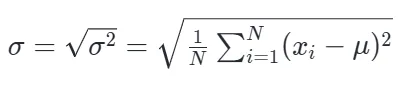
几何意义
标准差本质上就是高维空间里的直线距离。想象我们把一组数据 (x 1 ,x 2,…,x n ) 看作一个 N 维空间里的一个点（或者叫向量 x）。同时，把均值也看作一个向量 μ =(μ ,μ ,…,μ )。我们想知道：数据向量 x 距离中心向量 μ 到底有多远？
回忆一下初中学的勾股定理：在一个直角三角形里，怎么算两点之间的直线距离（斜边 c）？ 公式是：
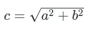
发现了吗？标准差的公式，和勾股定理几乎一模一样~
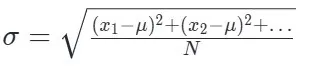
本质上，计算标准差，其实就是在多维空间里，计算原始数据点到平均值这个中心点的直线物理距离！
开根号的作用：开根号，恰好把抽象的数据差异，还原成了人类大脑最熟悉的空间物理距离。大脑在现实世界里看距离，看的就是那条直直的斜边（开完根号后的长度 c）。如果不开根号，我们拿到的其实是斜边上那个正方形的面积（c 2 ）。
基础特性
在统计学中，如果你把一组数据 里的每一个数，都乘以（或除以）一个常数 ，那么新数据的方差，等于原方差乘以 的平方。数学公式写成：
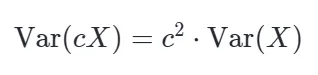
为什么常数提出来要加平方？ 因为方差的定义本身就是距离的平方的平均值。 想象一下：
- 如果一条线段的长度放大 2 倍，那么以这条线段为边长的正方形面积（即平方）会放大多少倍？是 倍。
- 同理，如果把数据的波动幅度（偏离均值的距离）放大了 c 倍，那么波动的平方自然就放大了 c 2 倍。
Z-score 标准化
数组每个元素先减均值再除以标准差（即方差的开根号）后，新数组的方差会变为1, 均值变为0。
假设有一个数组（或随机变量） ，它的方差为 。那么，它的方差的开根号（即标准差）可以表示为：
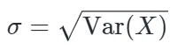
根据方差的常数乘法性质，如果我们将数组中的每个元素乘上一个常数 ，新数组的方差会变成原方差的 倍：
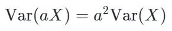
给数组的每个元素乘上了 1/σ（即除以标准差）。我们将 代入上面的公式：
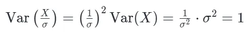
由此可见，经过这样缩放后的新数组，其方差必然变为 1。在实际应用中，为了让不同维度的数据具有可比性，我们通常不仅会除以标准差，还会先减去数组的均值（）。这就是著名的 Z-score 标准化公式：
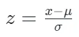
经过完整 Z-score 处理后的数组会具备两个非常优秀的统计特性：
- 均值为 0
- 方差为 1
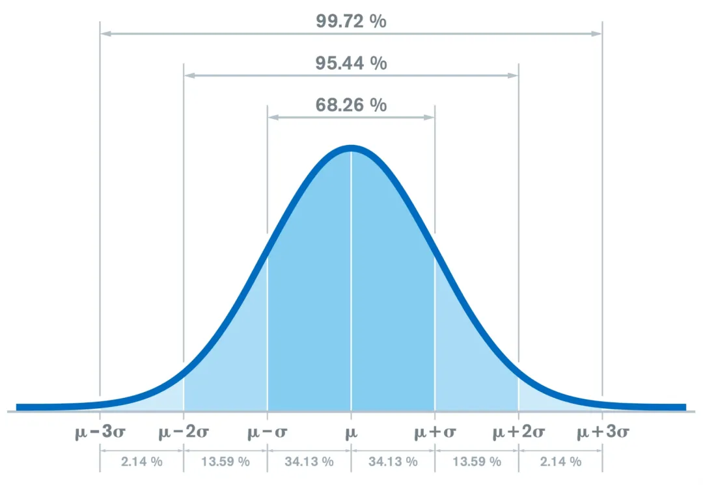
标准正态分布 N (0,1)： 这是一种平均值为 ，方差（和标准差)为 的理想数据分布状态。
Z-score 标准化只保证均值为 、方差为 ，并不保证数据服从标准正态分布 N (0,1)。只有当原始变量本身近似正态分布时，标准化后的变量才近似服从 N(0,1)。
1.4 LayerNorm (Layer Normalization)
为了解决开篇提到的数值溢出和梯度问题，深度学习直接把 Z-score 这个公式应用到了神经网络。比如常见的 BatchNorm 或 LayerNorm，本质就是利用 Z-score 强行把每一层的数据标准化，将数值的尺度拉回安全范围，从而防止梯度异常并加速模型收敛。
通过 Z-score（减去均值，除以标准差），主动剥离了那些毫无意义的“绝对偏移”和“绝对尺度”，将张量还原为纯粹的“相对信号”。这不仅不会丢失信息，反而帮助模型排除了数值大小的干扰，让每一层网络都能稳定、专注地处理特征之间的相对关系。
LayerNorm 的核心思想是对同一个 Token 内的所有特征维度（hidden size, ）进行标准化，使其均值为 0，方差为 1。
与LayerNorm对应的是BatchNorm, LayerNorm/RMSNorm 是严格在 Token 级别（Hidden Size 维度） 闭环的。无论外部的 Batch Size 怎么变，无论旁边并行的请求是写诗还是写代码，每一个 Token 自身的归一化结果不会发生变化。训推一致。
而BatchNorm训练时会把 Batch 内不同请求的同一个特征维度一起算均值和方差，其实想想就不合理，一个请求竟然会受到同一个批次的其他请求的影响，另外由于同批次的不同样本长度不一致需要来 零值一起算方差。在推理时，会使用训练积攒的全局历史均值（Running Mean），然而人类语言的上下文千变万化，不存在一个能适配所有文本分布的全局平均值。全局历史均值会极大的降低模型的表达能力。 另外训练与推理的机制割裂，训推不一致。
因此当前语言模型基本不会使用BatchNorm。
数学公式
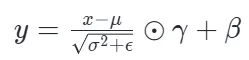
计算步骤:
计算均值（Mean）：
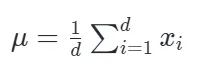
计算方差（Variance）：
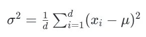
标准化并做仿射变换（乘以可学习参数 γ，加上偏置 β ）。
额，这里不就是归一化么？为啥又要可训练参数、 呢？很多资料说是为了增强特征表达能力，要我说就是实验恰好有效。
Infra 视角
LayerNorm 是一个典型的 Memory-bound（访存密集型） 算子。它的计算包含了两次 Global Reduction（全局规约）操作。最致命的是数据依赖：你必须先完整遍历一次数据算出均值 ，然后才能用 去遍历第二次算方差 。在 GPU 上，这意味着更复杂的线程同步，或者在 Kernel 未极致融合时需要多次往返读写 HBM（显存），极大地浪费了宝贵的内存带宽。
1.5 RMSNorm (Root Mean Square Normalization)
RMSNorm 的作者（Biao Zhang 等人，2019）通过实验发现：LayerNorm 之所以有效，主要是因为缩放（Scaling，即除以标准差）的作用，而平移（Mean-centering，即减去均值 ）对模型收敛的贡献微乎其微。
既然均值没用，那就直接砍掉它。放弃了计算均值，只保留对向量 RMS 尺度的归一化。
当然也有说法：LayerNorm 强行减均值（取平均归零）这个动作，其实是在人为地阉割模型的表达能力。
数学公式
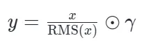
其中均方根（RMS）的计算：
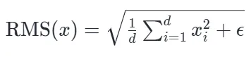
其中 ，即代码默认值：eps = 1e-6，实际运行值：取决于具体模型的 config.rms_norm_eps 配置，通常为 1e-5 或 1e-6，eps 的作用是防止除以零，保证数值稳定性，其值非常小，对最终计算结果的影响微乎其微。
Infra 视角
打破数据依赖： RMSNorm 不需要算 μ，直接计算每个元素的平方和即可。这意味着只需要一次单向的 Reduction 操作。
极致的访存优化： 在编写 Triton 或 CUDA Kernel 时，RMSNorm 可以非常丝滑地在一个 Block 内完成数据加载 (SRAM) -> 平方求和 -> 广播 -> 缩放的流水线，中间变量极少。
计算量减少： 省去了大量减法操作。主流模型在使用 RMSNorm 时，通常连后处理的偏置项 β 也一并去掉了（即无 Bias 线性层），进一步减少了参数加载和 element-wise 加法的开销。
这里值得注意的是：相对LayerNorm Bias也被去掉了： RMSNorm 常常只保留 γ 而去掉 β，这不是数学上必然要求，而是现代 LLM 架构中的经验选择。它通常与无 bias Linear、Pre-Norm 残差结构、SwiGLU 等设计共同出现，整体上减少参数与访存，同时保持效果。 也有类似说法：LayerNorm 包含减均值，因此后面跟着的线性层加 Bias是有意义的。而 RMSNorm 砍掉了平移，只做纯粹的尺度缩放，如果它后面紧跟的 Linear 层仍保留 Bias，就破坏了 RMSNorm 抛弃绝对中心、只维持相对尺度的初衷。
当今的主流开源大模型不仅仅RMSNorm 去掉了 β，而是几乎所有的 Linear 层都去掉了 Bias：
q_proj, k_proj, v_proj, o_proj 没有 Bias
MLP 的 gate_proj, up_proj, down_proj 也没有 Bias
对此有很多解释：
训练更稳定 "No biases were used in any of the dense kernels or layer norms. We found this to result in increased training stability for large models." - PaLM 论文
架构冗余：RMSNorm 后紧接 Linear 时，bias 的位移作用会被下一个 Norm 的γ/ 吸收；SwiGLU 的门控本身也提供了类似 bias 的自由度。bias 在现代架构里已被架构本身替代。
Infra 友好：少一次 add 与 bias load
但是要我说，就是实验有效 + Infra友好。专业的说法，哈哈：从工程视角看，这类设计往往并非单一数学原则的必然结果，而是效果、稳定性、实现成本和硬件效率共同权衡后的经验选择。
LayerNorm但借助 公式与 Kernel 融合，可实现只需访问一次 HBM。而 RMSNorm 进一步斩断了均值计算，压缩了 SRAM 占用和 ALU 指令周期。
LayerNorm虽然理论上需要均值和方差两步。高性能实现中并不必然需要两次 HBM，可以在一次 HBM load 中同时累计 和 ，甚至使用 Welford 算法提升数值稳定性。但相较 RMSNorm，LayerNorm 仍需要维护均值相关统计量，并在归一化阶段执行额外的减均值操作，因此寄存器压力、规约状态、ALU 指令数都更高。
RMSNorm 相对于 LayerNorm的收益：
- 减少了寄存器/SRAM 的占用。
- 节省了大量的 ALU（逻辑运算单元）指令，特别是消除了对全部元素的减法（减去均值，element-wise）操作。
其实在当今主流的 Fused CUDA/Triton Kernel中，LayerNorm 也是可以做到单次 HBM 访存（1 Pass）的。在数学上，方差可以等价展开为：
Va(E [X ])2
在 GPU 寄存器/SRAM 层面，我们在单一的一个 Block 遍历输入张量时，可以同时累计 和 。由于大模型的 Hidden Size（如 4096 或 8192）对应的字节数（约 8-16 KB）完全可以被塞进单个 SM 的 Shared Memory 中，因此无论 LayerNorm 还是 RMSNorm，现代算子在 HBM 层面都是只读一遍、写一遍。
虽然 E (E [X ])2 能实现 1-pass，但在 FP16 或 BF16 精度下，如果 E (E [X ])2 的值非常接近，相减容易引发灾难性抵消（Catastrophic Cancellation），导致方差精度丢失甚至计算出负数（最后开根号出 NaN）。因此在实际的 Kernel（如 Apex 或 Triton 内部）中有时会采用 Welford 算法来兼顾 1-pass 和数值稳定性，或者在累加时强制转换到 FP32 进行计算。
Va(E [X ])2 的推导逻辑：
假设数据的平均值为 μ（即 ）。方差的原始定义是：每个数减去平均值的平方，再求平均。即：
根据 ，我们展开得到：
因： = ，而 = μ， 所以 =
，因为 是个常数，常数的平均值还是它自己！所以 = 。
得：
而 就得到了最终的公式：
1.6 Post-Norm
ResNet 与 Transformer 一开始都是用的Post-Norm
- ResNet-v1 (2015年)：。何恺明在残差相加之后，套了一个 ReLU 激活函数。
- Transformer (2017年)：。 Google 团队在残差相加之后，套了一个 LayerNorm。
Post-Norm说白了，就是先做子层计算，然后和输入 做残差相加，最后对整体结果做归一化： 即：
- 计算残差分支：
- 再对结果做归一化：
在 Post-Norm中，如果把整个网络展开 ，主干路径被多个 Norm 层打断了。每次经过 Norm，梯度都会被重新缩放，导致层数一深，梯度在传回浅层时极容易消失或爆炸。
Transformer 采用了残差连接 + Post-Norm发现堆到 12 层、24 层（如 BERT）时还可以，但想要像 GPT-3 那样堆到 96 层时，训练容易崩溃。
另外，Post-Norm 架构在模型初始化的早期阶段，梯度每次沿着主干往下传，都必须穿过一次 LayerNorm，而被其导数（反比于输入方差）不断衰减。这就导致：靠近输出的深层网络会接收到未经衰减的巨大梯度，而靠近输入的浅层网络梯度却严重消失。这种极度不平衡的巨大深层梯度，会在第一步引发巨大的参数更新，导致深层的权重本身瞬间变大，最终在前向传播时引发激活值爆炸（ FP16 溢出）。
为了防止训练初期的梯度分布不平衡，引入了Warm-up机制。通过在训练的最开始阶段采用极小的学习率来严格限制参数的更新幅度，等待网络权重和归一化层的统计量逐步调整到相对稳定的分布空间后，再恢复正常的学习率。可以说，长周期的 Warm-up，很大程度上就是为了给 Post-Norm 架构固有的梯度缺陷打补丁。
1.7 Pre-Norm
Pre-Norm就是先对输入 做归一化，再送入子层计算, 最后和原始的 计算残差：
在 ResNet 发表的第二年（2016年），何恺明团队发表了一篇重要的论文《Identity Mappings in Deep Residual Networks》（即ResNet-v2）。他们发现，必须保证 所在的这条主路畅通无阻，不能加任何操作。
- ResNet-v2 (2016年)：，把 BatchNorm 和 ReLU 全都挪到了残差支路里面。
- Transformer-Pre-Norm (2020年前后)：，把 LayerNorm 挪到残差支路里。
在 Pre-Norm中，如果把整个网络展开，主干路径变成了纯粹的 ，梯度实现了无损回传，ResNet 可以轻松突破 100 层。（反向传播：求导产生的那个 1 保证了无论网络有多深，深层的梯度都能原封不动地传回浅层，从而让深层网络训练成为可能。）
Pre-Norm 治好了训练崩溃，让大模型的规模化（Scaling up）成为可能。因此，Pre-Norm 或其变体成为了现代大模型的主流选择。
然而，Pre-Norm 并非完美，它是用前向传播的妥协换取了反向传播的稳定。
在前向传播中，Pre-Norm随着层数加深，主干干路 累加的值越来越大（方差越来越大）。而 这一项因为经过了 Norm，输出的数值大小基本保持不变。这就导致越到深层，网络新添加的特征相对于主干 来说就越微不足道。这被称为模型的表征坍塌（Representation Collapse）。说白了，就是你没钱时，给你100块，你觉得很多。随着你的钱越来越多，同样的100块，你看不上了。这导致了一个有趣的现象：如果我们强行把 Pre-Norm 训练的大模型的最后几层直接砍掉（剪枝），模型的性能下降往往并不明显。
注：为了解决 Pre-Norm 的表征坍塌问题，微软曾提出 DeepNorm。它通过修改参数初始化系数，重新让 Post-Norm 能够稳定训练，甚至支持将网络扩展到 1000 层。但当今的主流大模型基本没有采用此方案。一方面，Scaling Laws 表明增加模型宽度和数据的收益远超极端加深层数，在百层以内的网络中，Pre-Norm 的坍塌现象并不致命；另一方面，业界已经形成了
Pre-Norm + RMSNorm的标准，现有的 AI Infra 均针对该组合做了极致的访存优化。引入 DeepNorm 意味着要放弃这些现成的高效算子，这也是理论算法向工程效率妥协的典型案例。
历史总是惊人的相似。错误也在一直重复。大模型从 Post-Norm 演进到 Pre-Norm，本质上就是NLP领域，在时隔几年后，重新把CV领域 ResNet-v1 升级到 ResNet-v2 的路，又走了一遍。
02
Softmax 的核心原理可以用一句话概括：将一组任意的实数（通常称为 Logits），转化为一套总和为 1 的概率分布，同时放大差异。
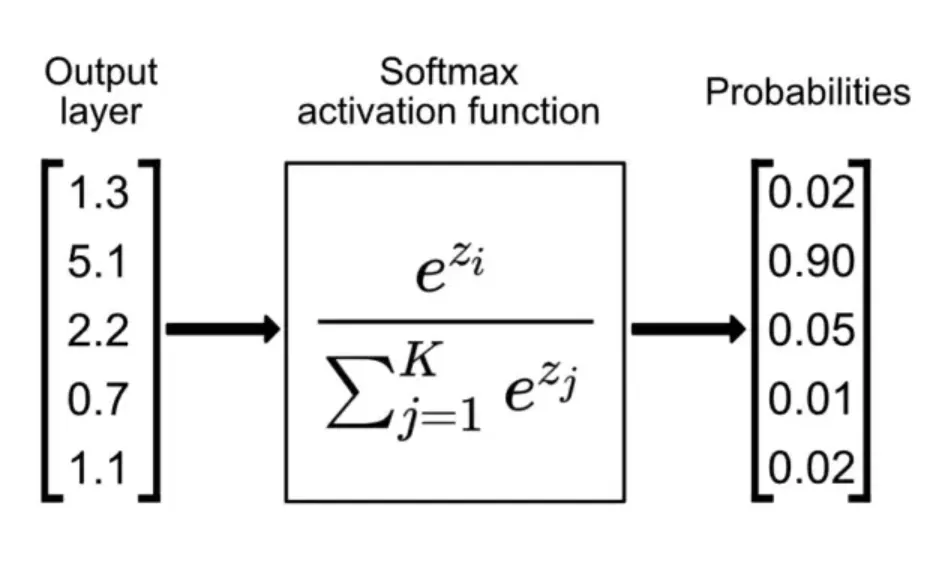
前面我们花了大篇幅探讨如何利用 RMSNorm 消除绝对偏移（均值），并通过约束方差来防止隐藏层特征在层间传递时出现数值发散与溢出。然而，在 LLM 的整体计算链路中，方差膨胀引发的稳定性风险并未完全消除。除了特征层面的归一化， Softmax同样对输入张量的数值尺度极其敏感，面临的数值稳定性要求与浮点计算瓶颈，因此在工程实现上同样需要平移和缩放。
2.1 从绝对分数（Logits）到概率
假设你训练了一个神经网络来识别图片是“猫”、“狗”还是“鸟”。网络的最后一层（通常叫线性层）会给每个类别打分（这个原始得分在数学上叫 Logits）。比如一张猫的图片进去，机器可能给出这样的得分：
猫：3.2
狗：1.5
鸟：−0.8
问题来了：这些得分有正有负，没有上限也没有下限。我们人类想看到的是：“这张图有 80% 的概率是猫，15% 是狗，5% 是鸟”。我们怎样才能把这些乱七八糟的得分，转换成加起来等于 1（即 100%），且每个都在 0 到 1 之间的概率分布呢？
这还不简单？把所有的分数加起来，算个百分比不就行了？比如：猫的概率= 3.2/(3.2+1.5−0.8) 。
这种做法（线性归一化）有两个缺陷：
分母可能为零或负数：因为原始得分里有负数（比如鸟是 ），加起来的情况不可控。概率怎么能是负数呢？
不够“爱憎分明”：如果得分是 100 和 101，直接算比例大约是 49.7% 和 50.3%。但实际上，机器给出 101 已经比 100 高出了整整 1 分，在许多任务中，我们希望模型对最高分有更强的“确信感”（即放大差距）。
2.2 从绝对Softmax引入e x
为了完美解决上面的问题，数学家和计算机科学家们引入了 （关于常数 e 的由来，参见文末附1）。Softmax 的核心公式是这样的（假设求第 个类别的概率）：
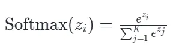
这个设计极其巧妙，它同时做到了三件事：
第一步：去负数（非负性）
无论输入的 x 是正是负，它的指数 ex 永远是大于 0 的正数（比如 ）。这保证了算出来的概率永远不可能为负。
第二步：求比例（归一化）
把所有类别的 ex 加起来作为分母，这样所有类别的计算结果加起来绝对等于 1。
第三步：放大差距，赢家通吃
指数函数 ex 的增长是爆炸性的。如果猫的得分比狗高一点点，经过 ex 放大后，猫的概率会大幅度碾压狗。它在模拟一种“硬最大值（Hard Max，即只要最大的那个，其他全为 0）”的效果，但又保留了其他类别的微小可能性。
比如对于对于 ：,结果约为：
即：Softmax 只关心 logits 之间的差值，而不是绝对大小。 和 的 Softmax 完全相同。
第四步：平滑可导
如果直接用 Hard Max（输出 1, 0, 0），这个操作是不可导的，神经网络的反向传播算法就无法更新参数。而 ex 的导数是它本身，非常平滑，简直是为微积分量身定制的。
HardMax:
如果输入是 [2.0,1.0,0.1]，Hard Max 输出是 [1,0,0]。
缺点：不可导（在非最大值处导数为 0），无法通过梯度下降进行反向传播。
SoftMax :
同样的输入 [2.0,1.0,0.1]，Softmax 输出约 [0.7,0.2,0.1]。
它保留了“最大值概率最高”的特性，但没有把其他值杀死。这保证了全程可导，让神经网络能够学习到“第二好的选择”以及类别之间的细微关系。
2.3 平移机制：Safe Softmax(-M)
在写 CUDA kernel 或优化算子时，不会直接照搬上面的公式，因为会有硬件层面的浮点数溢出（Overflow/Underflow）的问题。
如果 很大（例如 1000）， 会直接导致浮点数溢出 (NaN/Inf)。
我们在计算前，先从所有输入中减去最大值 。即公式变为：
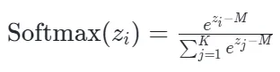
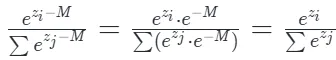
数学上结果不变。- 工程上， 永远 。最大项变成 ，其余项是 0 到 1 之间的小数。彻底解决了上溢出问题。（下溢出通常不影响训练稳定性，通常会被视为 0）。
Softmax 的核心特性是：它只关心数值之间的“相对差值”，根本不关心数值的绝对大小。
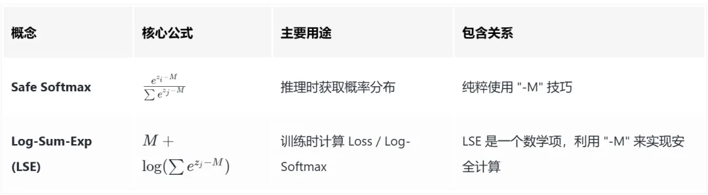
2.4 缩放机制：为什么必须除以√dk？
在 Attention 计算中，Softmax 计算的是当前 Token 对上下文中所有历史 Token 的『注意力权重』。它的归一化操作是沿着序列长度（Sequence Length）维度展开的：即把单个 Query 与所有历史 Key 算出的 个点积相似度得分（Logits），转化为一个总和为 1 的概率分布，以决定当前词在生成时，应该向历史中的哪些词分配多少注意力。
然而，产生数值溢出和梯度消失风险的根源，并不在于参与归一化的序列有多长，而在于这 个 Logits 中的每一个，都是由长度为 的 Query 和 Key 向量经过 次乘积累加得到的。如果不加干预，直接将高维点积的结果丢给 Softmax，会导致梯度消失。问题的核心在于：点积结果的方差，会随着维度 的增大而剧烈膨胀。
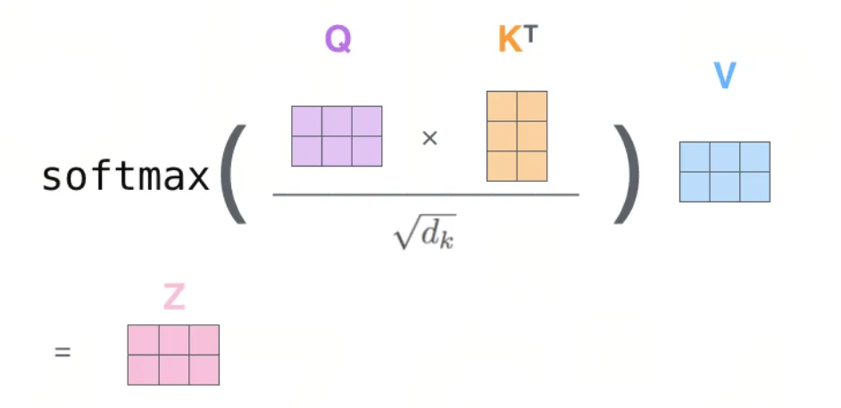
方差膨胀
我们可以从统计学角度直观且严谨地理解这一点。两个向量的点积，本质上是 个乘积项的累加：
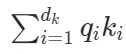
为了在数学上精确推导这个累加过程对方差的放大效应，Transformer 的原作者在论文中构建了一个理想的统计假设：假设 和 向量中的每一个元素 和 都是相互独立的随机变量，并且都满足均值为 0，方差为 1。
单个乘积项 的方差
在统计学中，已知两个独立变量乘积的方差公式为： 因为我们假设了均值 且 ，公式的后两项被直接抹零。公式简化为单纯的方差相乘： 这意味着，每一对元素相乘后，得到的这一个“乘积项”本身的方差是 1。
个乘积项累加的总方差
在统计学中，任意两个独立变量和的方差，严格等于它们各自方差的累加： 公式最后的 代表协方差，由于我们假设各变量互相独立，协方差为 0，公式化简为纯粹的加法。 因此，把 dk 个互相独立的乘积项加起来，总方差就是：
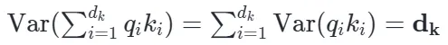
这就是方差膨胀的数学真相：经过 dk 次独立的累加，点积结果的方差直接变成了
dk 倍。
不过这里有一个触及灵魂的问题：在真实的神经网络中，因为经过了 和 的线性映射，且特征间具有高度的语义相关性， 和 不太可能满足的相互独立、均值为 0、方差为 1。
确实如此。那为什么这个基于假设推导出的 √dk ，依然成为了大模型 Attention 的标准范式？
别那么认真，你就说实验效果变没变好吧，毕竟大模型本身就是个实验科学。 伟大的总设计师曾经说过：“不管黑猫白猫，能捉老鼠的就是好猫。”
不过这块业界也有解释：这个基于理想统计模型推导出的√dk ，虽然在现实网络中并不严格成立，但它在模型初始化的第一步，完美地稳住了 Logits 的量级，让 Softmax 避免了开局即死于梯度消失。至于训练中后期数据分布偏离了假设怎么办？不用担心，只要一开始稳住了起步，神经网络强大的参数更新能力自己就会去适应这套缩放规则。这就是大模型中的玄学， 理论向工程妥协。
训练权重的初始化
都到这里了，不如我们看看 和 是怎么来的？它们的完整计算路径是：
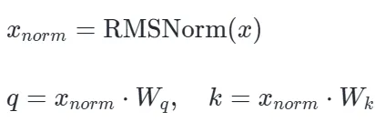
经过 RMSNorm 处理后，输入向量 的均方根被强行拉到了 1。这在数值上等价于：给后续的线性映射提供了一个尺度被严格约束（近似方差为 1）的输入，但是均值肯定不为0。（～～又是近似）
那为了训练开始时，尽可能满足 和 相互独立、均值为 0、方差为 1。我们应该如何初始化权重呢？Amazing～开始有意思了
相互独立：
当框架（如 PyTorch）调用 torch.nn.init.normal_() 去填充 和 时，矩阵里的每一个元素 ，都是从正态分布中独立抽样（Independently Sampled）出来的。 而高维空间中的两个随机向量，绝大概率是近乎正交（垂直）的。
方差为1:
前面有 RMSNorm 兜底，强行把方差约束住了，所以 。
此时，只要框架在初始化 和 时，严格遵循方差控制原理，使其权重分布的方差为 1/dmodel（这里输入维度 ）。
权重初始化要求：要求前向传播时，每一层输出的方差应该与输入的方差保持一致，避免梯度消失或爆炸
根据前面的公式推导：
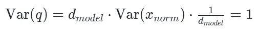
均值为0:
前面虽然经过了 RMSNorm，但因为它刻意去掉了平移（减均值）操作，其均值大概率不为 0，即 。
此时，只要框架在初始化 和 时，强制使用完全对称的分布（如正态分布 mean=0.0 或均匀分布 [-a, a]），严格将其权重分布的数学期望（均值）锁死在 0，即 。
权重初始化要求：不管上一层传过来的数据偏成了什么样（Any），只要这一层的权重均值是 ，乘积相加后，就能强行把数据的均值阻断并拉回到 附近（）。
根据统计学中期望的线性性质与独立变量乘积法则公式推导，输出向量的均值瞬间被阻断并归零：
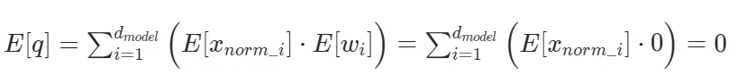
额，完美～但是看到代码，天塌了。不是这么搞的
# 基础初始化策略（PreTrainedModel._init_weights）std = self.config.initializer_range or 0.02 # 默认std=0.02init.normal_(module.weight, mean=0.0, std=std) # 均值0，标准差0.02
均值确实是0，但是标准差写死的0.02 ～ 怎么说呢。std = 0.02是个经验值，有些大模型也是用
权重初始化伪代码：
if layer_name in ['o_proj', 'down_proj']:# 如果是残差分支的出口层# std = 0.02 / sqrt(2 * num_layers)scaled_std = self.config.initializer_range / math.sqrt(2.0 * self.config.num_hidden_layers)init.normal_(weight, mean=0.0, std=scaled_std)else:# 其他普通的层 (q, k, v, up, gate 等)，照常使用 0.02init.normal_(weight, mean=0.0, std=self.config.initializer_range)
然后你可能也看见了，对于残差分支的出口层还做了额外的缩放std=.webp) ，主要是为了防止Transformer 几十上百层的残差连接（Residual Connection）累加引发的方差爆炸。
，主要是为了防止Transformer 几十上百层的残差连接（Residual Connection）累加引发的方差爆炸。
主干路径是 。在一个 80 层的 Transformer 中，每一层（Layer）包含 2 个残差连接（一个过 Attention，一个过 MLP/FFN）。所以 80 层总共有 个残差支流。
we scale the weights of residual layers at initialization by a factor of is the number of residual layers。 *（引用自GPT-2 论文）
梯度消失
用Softmax是因为Softmax缩放效果好, 但是点积的方差会随维度 膨胀
维度小的时候（方差小）：Logits 是 ，Softmax 输出大概是 $[0.7, 0.2, 0.1]，保留了 "Soft"的特性。
维度大的时候（方差大，未缩放）：Logits 变成了 。此时 Softmax 的输出会变成近似 （其实是 0.9999... 和一堆接近 0 的数）。
这种绝对值极大的 Logits 会让 Softmax 产生“赢家通吃”现象，从 "Soft" 彻底退化成了 "Hard"。
这在模型训练时是致命的：Softmax 函数的导数与 成正比（ 为输出概率）。如果 极度接近 1 或 0，导数就几乎为 0。从而导致梯度消失。
√dk 缩放
既然点积累加后的方差变成了 ，那么它的标准差就是 √dk。
根据方差的性质 ，只要我们在传入 Softmax 之前，强行将点积结果除以 √dk，就能完美地将 Logits 的方差重新缩放回 1。通过这种优雅的数学干预，无论 Attention 的维度 变得多大，Logits 始终被锁定在 Softmax 梯度最饱满的舒适区内，从而保证了深层网络训练的稳定，同时也保证了推理时注意力数值的分布稳定。
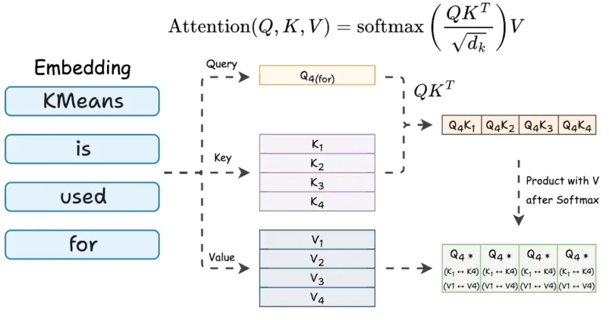
2.5 Causal Mask - 序列维度的因果约束
在大语言模型中，生成文本必须遵循严格的时间因果律：第 个 Token 只能看到它之前的历史 Token，绝不能“穿越”去获取第 个 Token 的信息。
假设不加干预，第 个 Query 向量与所有 Key 向量做完点积后，得到的 Logits 是一个长度为 的无界实数向量。为了让它对未来 Token（）的注意力权重绝对为 0，我们在这些特定位置的 Logit 上强行加上一个负无穷（在工程中通常用一个极小的常数替代，如 或在 FP16 下的最负安全值）。
数学表达为（针对上三角区域，即 ）：
经过 Softmax 的非线性映射后：
通过这种极端的数值平移，未来 Token 在分母累加和分子中都会被彻底抹零，不仅实现了物理意义上的因果隔离，且依然保持了当前 Token 的局部概率和为 1，完美维系了概率单纯形的约束。
过去,实现 Causal Mask 需要在显存中生成一个庞大的 掩码矩阵并与 相加,这在长文本下会引发灾难性的访存瓶颈(Memory-bound)。
如今的 FlashAttention 等高性能算子直接在底层引入了块稀疏（Block-Sparsity）机制。它不再在全局显存中生成掩码，而是在 Tile 调度层面根据当前分块（Block）的行列索引进行分类处理：
- 对角线以上的分块（严格的 ）： 完全跳过。既不执行矩阵乘法，也不从 HBM 搬运对应的 K/V。这直接把 Attention 的计算量和访存量砍掉了一半。
- 对角线以下的分块（严格的 ）： 所有的 Key 都是合法的历史信息，直接正常计算，不需要任何掩码指令的开销。
- 横跨对角线的分块： 只有在这极少数的边界 Block 内部，才会在 SRAM/寄存器中实时判定元素的精确索引，并对右上角部分写入 （在 FP16 下通常取最小安全值 -65504）。
这种底层调度让掩码本身的 HBM 访存开销归零（ 矩阵），并将 attention 两次大矩阵乘( 和 )的计算量与访存量都降低了接近 50%。
值得注意的是，Causal Mask 只在训练阶段和推理的 Prefill（首字生成/上下文处理）阶段 生效。 在推理的Decode阶段，当前的 Query 是一个长度仅为 1 的向量，而它需要与全局所有的历史 KV Cache 进行点积。此时所有的 Key 都是过去式，因果关系天然成立，因此在底层的 Decode 算子中，根本无需执行任何 Causal Mask 相关的指令开销。（Speculative Decoding / Medusa/Eagle 等多 Token 验证场景除外）
在早期的推理系统中，为了将不同历史长度的 Request 组成 Batch 并行计算，需要将短请求补齐（Padding），并在 Attention 时加上 Padding Mask 来屏蔽无效的占位符。
而在现代如 vLLM 这样的架构中，Attention 的计算是严格保持在 CUDA Kernel 层面的 Request 级别隔离（Request-level isolation）的。这意味着对于 Decode 阶段的纯 GEMV 访存操作，我们既不需要在计算层面执行任何统一的掩码处理（屏蔽了 Causal 和 Padding 的逻辑），也不需要在全局显存（HBM）层面去做任何张量展平或碎片的显式拼接搬运。
每一个 Request 所在的 Kernel 线程块，顺着页表指针（Block Table），将离散的局部历史 KVCache 块直接从 HBM 即时拉取（Gather）到片上 SRAM 中完成计算。时序因果自然闭环。
2.6 Online Softmax
结合√dk缩放和Causal Mask，Attention的公式变为：
在 算子开发中，如果按照上述公式进行朴素实现，需要对 Global Memory 中的数据进行 3 趟读写（3 Passes）：
Pass 1（找最大值）：遍历输入向量 z，找到最大值 M=max(x)。
Pass 2（算分母）：再次遍历 z，计算所有的指数和作为分母：
Pass 3（算结果）：第三次遍历 z，计算最终结果：
在底层硬件（如 GPU）上，每一次遍历都意味着需要从全局内存（HBM）中将数据读取到计算单元，然后再写回。在算力远超显存带宽的今天，这种频繁的 HBM 访存（Memory Access）会造成巨大的延迟，成为典型的带宽瓶颈。
尤其在大模型推理（尤其是长文本 Prefill 阶段）Attention计算中，如果严格按照数学公式分步执行，会在 GPU 的 HBM（全局显存）中产生庞大的中间矩阵 （注意力分数）和 （Softmax概率），其 的内存访问量会严重影响性能，即所谓的内存墙问题。
怎么办呢？业界比较通用的算子优化办法有Kernel 融合 (Kernel Fusion) 与 分块计算 (Tiling)，本质就是IO Aware，即多用寄存器和SRAM，少用HBM。有没有可能用上呢？不行，Attention计算时则面临一个致命的数学障碍：Softmax 操作需要知道全局的最大值和指数和才能计算，这通常要求完整的中间矩阵驻留在显存中。
因为Pass 2 依赖 Pass 1的最大值，导致Pass 1和Pass 2必须串行，从而必须保存中间矩阵来完成这个操作。那真没有办法让Pass 1和Pass 2并行么？搞不定这个问题，AI行业就完蛋了。死脑子，快想，哈哈哈～
有没有可能：维护局部的当前最大值（Running Max）和当前指数和（Running Sum），并在读入新块时利用动态缩放因子（Rescaling Factor）对旧结果进行修正。 最终1 Pass就可以实现 找最大值和找分母呢？ 是的，这就是Online Softmax。
而FlashAttention 则把这个"边走边修正"的思想从 softmax 内部推广到了整条 attention 流水线：对每个 Q tile，沿 K/V 方向做一次融合遍历，就同时完成 、online softmax、以及 三件事。让中间矩阵 始终活在寄存器中、不写回 HBM——最后只把每个 Q tile 的 和 LSE 写出去。
Online Softmax 数学推导与执行流
假设我们正在遍历序列，当前处理到了第 个元素 。我们在寄存器中维护两个全局状态：
当新元素 到来时（更新逻辑）：
更新当前最大值：
更新当前的指数累加和：
遍历完所有 N 个元素后，我们就同时得到了全局的真正最大值 M 和全局真正的分母 d。最后，只需要第二次遍历计算最终结果：
如果新的 zi 没有打破记录（），缩放因子就是 ，直接累加即可；如果 zi 创了新高，旧的局部和就会被乘以一个小于 1 的衰减系数，完美等价于从一开始就用全局最大值来计算。
FlashAttention的实现
在真实的大模型计算中，Attention 不仅要算 Softmax，还要把 Softmax 的结果乘以 Value 矩阵（即 ）。 为了把 Online Softmax 的“边走边修正”思想推广到整条 Attention 流水线上，FlashAttention 在 KV 维度上不停合并 Tile，并在循环内部长驻一个未归一化的状态三元组：
每当读取到一个新的 KV Block，计算出局部的点积结果 后，执行如下更新逻辑：
for kv_block in KV_Cache:S_local = Q @ kv_block.K.T # 计算局部注意力得分 Sm_new = max(m_old, max(S_local)) # 寻找新的全局最大值scale = exp(m_old - m_new) # 核心：计算对历史数据的修正缩放因子# 1. 修正历史分母，并累加当前块的指数和ℓ_new = ℓ_old * scale + Σ exp(S_local - m_new)# 2. 修正历史输出 Õ，并拿着【未归一化的权重】直接乘当前块的 VÕ_new = Õ_old * scale + exp(S_local - m_new) @ kv_block.Vm_old = m_new # 更新最大值记录# 此时所有 KV 都看完了，我们拿到了真正的全局分母 ℓ 和全局 ÕO_final = Õ_new / ℓ_new # O(1) 的标量/向量除法归一化
每一步都在做什么？
scale = exp(m_old - m_new)把"基于旧 max"的历史累加值校正到新 max 基准下；- ℓ 随新 tile 贡献增长；
同步按
scale收缩，再把新 tile 的 P⋅V 即exp(S_local - m_new) @ kv_block.V加进去；
以上描述的逻辑主要是FlashAttention v2以及之后版本的实现。下面简要说下FlashAttention v1 到 FlashAttention v2的进化逻辑。（当前FlashAttention已经进化到V4版本，详见附2，本文不再深入）
FlashAttention v1 （外 KV，内 Q）
在 FA1 中，kernel 的外层循环是 KV block、内层循环是 Q block，并且每个 (batch, head) 只启动一个 CTA。这带来两个问题：
- 并行度不足：Grid 维度被限制在 ，即只有 个 CTA；在长上下文（Long Context）且 Batch/Head 较少的场景下，GPU 内部的大量 SM（流多处理器）会处于闲置状态，根本跑不满。
- Q 状态的 HBM round-trip：外层每处理完一个 KV block，当前 CTA 已经更新了所有 Q block 的部分状态 。由于 Sq 很大、放不下全部 Q 状态，只能写回 HBM；下一个外层 KV 迭代再从HBM 读回来继续累加。同理，Q 和 KV 本身也会被反复读入。
FlashAttention v2 （外 Q，内 KV）
FA2 将外循环改为遍历 Q blocks，内循环遍历 KV blocks。这意味着每个 CTA（线程块）只需认领一个 Q tile，就可以像流水线一样吞吐历史 KV blocks。最终，Q 只在一切结束时向 HBM 写回唯一一次 和 LSE，避免了 FA1 中的 HBM 读写中间态。
Grid 维度的并行度提高，把 序列长度也加入了并行维度
gridDim = (⌈seqlen_q / BLOCK_M⌉, batch_size, num_heads)在 CTA 内部，FA2 沿着 Q 的 M 方向切分任务，让每个 Warp（线程束）独占一部分 Q 行（例如 kBlockM / num_warps 行）。
在 GPU 底层的物理执行中，Tensor Core 执行 MMA（矩阵乘累加，）指令时，输出结果本来就会暂存在的 Warp物理寄存器（C-fragment） 中。因为外层循环固定了 Q，这部分 Q 对应的未归一化状态 可以直接长驻于这些物理寄存器中。（其中 acc_o 直接利用 MMA 指令的 C-fragment 累加）
随着内层循环源源不断地从 Shared Memory (SRAM) 搬入新的 K 和 V Block，Warp 只需要利用硬件指令，对着寄存器里的 进行原地累加 (In-place Accumulation)。
直到该 Q tile 遍历完了所有的历史 KV，这组长驻寄存器才会执行最后一次除以全局 的归一化操作，然后一次性写回全局显存 (HBM)。由于每个 Warp 处理的 Q 切片互不重叠，其输出结果完全独立，Warps 之间不再需要通过 SRAM 进行结果拼接（Reduce），从而消除了底层 Barrier 同步的通信开销。
特别注意：
在 FA2 中，每个被分配了不同 Q tile 的 CTA 都独立地去 HBM 遍历读取全量的 KV cache。这看起来会让 KV 的 HBM 流量相比 FA1 放大 num_q_blocks 倍，但实际测量中远没有达到这个上界——主要归功于 GPU 的 L2 cache。
同一 wave（调度波次）内的 CTA 会在极短的时间差内访问相同的 KV block。当第一个 CTA 把数据拉进全局 L2 时，后续 CTA 会命中 L2（带宽约为 HBM 的 4 倍，H100 下 ~12 TB/s vs ~3 TB/s），在期望值意义上把物理 HBM 读次数压回接近Nkv。
但从体系架构视角看，这机制相当脆弱——它本质上依赖硬件黑盒调度器让相关 CTA 保持"齐步走"。一旦出现调度断层（wave 间断层、SM 占用不均），或长上下文把 KV 挤出 L2 容量（H100 仅 50 MB，长 context 的 KV 是 GB 级），命中率会从 ~99% 退化到 80% 以下，出现实测可见的性能拐点（不是悬崖式"爆炸"，是曲线劣化）。
这也是为什么顶级算子架构（FA3/FA4、TRT-LLM、vLLM 的高性能 attention 后端）必须走两条硬路：
Tile scheduler 主动编排访问顺序
（Persistent kernel + TMA multicast：flash_attn/cute/tile_scheduler.py）：在软件层让相邻 CTA 访问相邻 KV block、按 L2 容量做 swizzle——这是不依赖新硬件、但也不完全是"碰运气"的中间层；详见 §2.6.4.2。Persistent kernel 让 CTA 常驻 SM、自己从全局 work queue 取任务，绕过硬件 CTA 调度器——调度从硬件层下移到软件层，消除 wave 断层；
TMA multicast（SM90+）让 cluster 内 N 个 CTA 共享一次 HBM 读，把 cluster 大小内的 KV 重读从 L2 软期望升格为硬件合约（本仓库
hopper_helpers.py、blackwell_helpers.py里的 2CTA 指令）。
LSE 与 Online Softmax
上面提到了FlashAttention的返回值有LSE，LSE是什么呢？
假设某一个 Query 与所有 Key 计算得到的原始点积得分（Logits）为向量 。在数学上，Log-Sum-Exp 的原始定义是：所有元素指数和的对数：
但在工程上，直接算 会导致浮点数上溢（NaN）。因此我们要结合 Safe Softmax 的减最大值技巧，令 。我们将 巧妙地拆解为 ：
所以公式变成了：。额，这是在干嘛？这个公式有个毛用？
事实上，利用 Online Softmax 机制存下 已经足以将 的全局读写降维至 。但 FlashAttention 更进了一步：通过 的数学恒等代换，它将 2 个 FP32 变量进一步压缩为 1 个 FP32 标量（LSE）。
这个区区 大小的单一变量数组，完美支撑了三大核心机制：反向传播时的 矩阵精准重算（化除法为减法 ）、长文本推理时的 Split-K 局部归约合并，以及严格契合下游算子（如 Cross-Entropy Loss）的直接复用。这构成了 FlashAttention 空间复杂度优化的核心基石。
为什么存 LSE（log-sum-exp） 而不是分别存 ？
Flash-Decoding 的 Split-K
在自回归的 Decode 阶段，参与计算的 Query 长度只有 1。如果让单一 SM（流多处理器）去独自处理长达几十万的历史 KV Cache，会导致严重的算力闲置和极高的延迟。为了拯救 GPU 利用率，Flash-Decoding 引入了 Split-K（KV 维度切分）技术：将长长的 KV Cache 切片分发给多个不同的 SM（流多处理器）并行计算。
但不同 SM 算出来的局部 Softmax 是无法直接相加的，因为分母不同、局部最大值也不同。各个 SM 独立计算后，向全局显存（HBM）写回自己的局部输出和局部状态。
而 LSE 的引入，使得各个 SM 只需要写回 1 个标量（LSE）而不是 2 个，将这部分 HBM 带宽开销砍半。LSE (Log-Sum-Exp)使得各个 SM 只需向全局内存写回自己这块碎片的局部 和局部 LSE，最后的 Reduction Kernel 就能利用 的数学特性，把不同 SM 的结果完美缝合，最终形成全局真实的 Attention 输出。
反向传播中的重计算
在传统 Attention 的反向传播（求梯度）过程中，数学推导要求必须使用前向传播时算出的 Softmax 概率矩阵 。对于长文本来说，如果把这个庞大的 的 矩阵保存在全局显存（HBM）里等反向传播用，显存会爆炸。 这里的N指的是序列长度。
但有了 这个公式，FlashAttention可以支持：前向传播时，不存 矩阵，而是在HBM中存一个极度压缩的、大小仅为 的 LSE 一维数组。当反向传播需要 时怎么办？直接在片上 SRAM 重算（Recomputation）。
我们只需要读取 Q 和 K 重算出局部点积 ，然后从 HBM 读出对应的 LSE 标量，做标量减法和指数运算（），就精准还原出了。
如果没有LSE，我们需要从 HBM 读取 ，然后执行除法 。在 GPU 底层，除法指令比较昂贵。但由于我们存的是 LSE 标量，重算公式变成了 。LSE 利用对数法则化除法为减法，虽仍需一次 SFU 指令计算指数，但省去了昂贵的除法指令，最重要的是打破了 HBM 的带宽墙。
Sequence Parallelism (SP)
如今的大模型上下文长度动辄百万 Token。当单卡显存无法容纳时，必须使用序列并行（Sequence Parallelism, SP）或上下文并行（Context Parallelism, CP）。模型会被切片分发给多张 GPU（甚至跨节点）计算。
比如在 Ring Attention，在处理跨卡 Attention 时，若采用对局部输出 进行全局 Reduction 的方式，不仅通信模式难以流水线化，还引入昂贵的同步开销。因此，Ring Attention 选择在环形拓扑中 P2P 传递 K 和 V 切片，每张卡保持本地 Q 不动。得益于 Online Softmax 的增量修正机制，各卡只需维护极少的元数据（LSE 标量），便能在接收到新 KV 切片时，本地完成
的无损在线更新，最终结果与全局 Attention 数值完全一致。这不仅避开了高昂的 All-Reduce 通信，还实现了计算与 KV 传输的完美重叠（Overlap）。
2.7 Temperature (T) 控制：Sampling 的 Softmax
LLM 生成时的 temperature 参数其实就是作用在 Softmax 里的：
- (低温): 差异被放大，分布变尖锐，模型更倾向于选概率最高的词（确定性高）。
- (高温): 差异被缩小，分布变平坦，模型更有可能选到低概率的词（创造性高）。
以上，通过 Softmax 算出的词表概率，加起来为 1。我们要如何根据这个概率抽样？
目标：即已知一组概率 ，如果 ，那么有 80% 的概率抽到索引 1。
Multinomial Sampling
常规做法（轮盘赌 / Multinomial Sampling，即torch.multinomial）是生成一个 的均匀随机数 ，然后去算 的累加和（Cumulative Sum, 前缀和）。当累加到某个索引 时，总和第一次超过了 ，就返回 。 问题： 在 GPU 上，要对长达 128,256（Llama3 词表大小）的数组算前缀和，非常不利于极度并行的线程发挥，且存在显存同步开销。
Gumbel-Max Trick
背景知识
数学家证明了，只要给每个类别的对数概率 加上一个标准的 Gumbel 噪声 ，然后直接取最大值（argmax），其结果与Multinomial Sampling在数学上是完全等价的！
那么，如何生成 Gumbel 噪声？最常见的方法是通过均匀分布 ：
vLLM中的Gumbel-Max的实现
为了兼顾硬件执行效率和数学严谨性，vLLM 使用了一个极其优雅的 Gumbel-Max Trick 变体：
q = torch.empty_like(probs)probs = logits.softmax(dim=-1) # 1. 计算出概率分布q.exponential_() # 2. 生成一个标准的指数分布噪声 q ~ Exp(1)probs.div_(q).argmax(dim=-1) # 3. 将概率除以噪声，直接取 Argmax！
由于对数函数 是单调递增的，求argmax(p/q)完全等价于求 argmax(ln(p/q))。将其展开：
argmax返回的是一组数据中最大值所在的索引（位置下标），而不是最大数值本身。
标准指数分布 可以由均匀分布 通过 生成。我们代入上式：
Amazing，后半部分 恰好是前面提到的 标准 Gumbel 噪声 ！给对数概率加上 Gumbel 噪声后再取最大值，在数学上已被严格证明等价于依据原概率分布进行采样。
这个数学转换在Infra 视角上的价值是巨大的。它将Multinomial Sampling逻辑转化成适合 GPU 并行计算的操作：
q.exponential_(): 完全相互独立的随机数生成。div_(): Element-wise（逐元素）的向量除法，没有任何数据依赖。argmax(): 并行规约（Reduction）操作。
更近一步，通过这种做法，贪心采样（Greedy）和随机采样（Random）在代码执行流上被彻底统一了：无非就是随机采样多做了一步除以噪声 的操作，最终全都是执行 argmax 寻找最大值，消灭了底层 Kernel 的分支发散（Branch Divergence）。
在大模型词表动辄 128K~256K 的今天，vocab 通常会沿张量并行维度切分到多张 GPU 上。此时如果走传统的 multinomial 采样路线，跨卡做一次全局采样代价并不小——要么 all-gather 整张 logits，要么跨卡做 prefix-sum + 二分查找，通信量和同步点都很难压下来。而一旦换成 Gumbel-Max 形式的 argmax(logit + g)，采样就退化成了一个满足结合律的 reduce 运算：每张卡只需在本地 shard 上算出局部最大值及其索引，再做一次廉价的 All-Reduce(MAX with index) 即可拿到全局采样结果。通信量从 O(V) 直接降到 O(world_size)。
03
其实本章一开始我是想放在开头的～但是我担心读者被吓跑，就移动到最后了。算是一个总结吧。
深度学习模型中极大或极小的数值极易引发梯度问题或计算溢出，而神经网络真正关心的并非数值的“绝对大小”，而是特征之间的“相对差异”。
- LayerNorm 通过 平移（减去均值 μ）+ 缩放（除以标准差 σ），将数据的均值归零，并将数据的波动范围（方差）强行拉回 1。
- RMSNorm 则基于缩放比平移更关键的假设，去掉了平移，只保留对向量 RMS 尺度的归一化，减少了大量的 element-wise 操作，还减半了 Reduce的数据通信量和寄存器占用，因此更适合极致的高性能 Kernel 实现。
Softmax 的核心原理是将一组任意的实数（通常称为 Logits），转化为一套总和为 1 的概率分布，同时放大差异。
Gumbel-Max 用加噪求最大值替代了传统的轮盘赌算法。它将原本需要串行计算前缀和的采样过程，转化为完全独立的 element-wise 并行运算，打破了超大词表下的全局数据依赖。
无论是 Normalization 、Softmax还是Gumbel-Max 相关操作，大模型推理底层优化的核心逻辑始终如一：用数学等价变换、数值稳定重写、或经过验证的近似/架构简化，换取更好的访存局部性、并行度和 kernel 融合空间。
04
以上，大模型的训练和结果输出都是不确定的，但是其数学原理是确定的。最近经常在想，当前的Transfomers架构从效果上来说已经足够好(Full Attention + MoE)， 从而当今AI Infra主要就是在不损失或者少损失效果的前提下做极致的性能优化。
比如上文提到的online softmax、Gumbel-Max、RMSNorm；
比如FlashAttention本质上是利用IO Aware、重计算提升计算强度；
比如KV Cache优化：MHA、MQA、GQA、MLA、KV Quant、SWA、DeepSeek V3.2-Exp 的 DSA（Lightning Indexer + Top-K 稀疏选择）、Linear Attention、TurboQuant 到DeepSeek V4的CSA + HCA 这里的本质就是解决1. 内存墙问题； 2. 显存容量问题；3. 减少计算量.
比如MoE Scaling Law模型不断增大，计算量随参数线性增大，而参数占比的大头又在MLP层，因此就把MLP层拆分，美其名曰不同专家，每次执行仅激活部分参数, 其本质就是在将现有FFN层拆分成多个，然后增加路由，每次可以激活不同专家组，以减少计算量。
当前的大模型更多的是工程上的事情，大模型本身就是基于科学假设的实验科学。试错的速度，往往决定了模型进化的速度。
当然这里的是试错不仅仅是训练，还包含Test-Time Scaling: 在 AI 迈向 System 2（慢思考）和 Agent（智能体）的时代，推理不再是简单的单向吐字（System 1），而是变成了复杂的搜索、反思与自我进化过程。
（注：《Tree of Thoughts (ToT)》- 来自姚顺雨（腾讯 / 前 OpenAI / 普林斯顿博士 /清华姚班））
05
Online normalizer calculation for softmax：https://arxiv.org/abs/1805.02867
Root Mean Square Layer Normalization：https://arxiv.org/abs/1910.07467
Flash-Decoding for long-context inference：https://crfm.stanford.edu/2023/10/12/flashdecoding.html
Identity Mappings in Deep Residual Networks：https://arxiv.org/abs/1603.05027
Deep Residual Learning for Image Recognition：https://arxiv.org/abs/1512.03385
Understanding the difficulty of training deep feedforward neural networks：https://scholar.google.com/citations?view_op=view_citation&hl=en&user=_WnkXlkAAAAJ&citation_for_view=_WnkXlkAAAAJ:u5HHmVD_uO8C
Language Models are Few-Shot Learners：https://arxiv.org/abs/2005.14165
Language Models are Unsupervised Multitask Learners：https://cdn.openai.com/better-language-models/language_models_are_unsupervised_multitask_learners.pdf
Delving Deep into Rectifiers: Surpassing Human-Level Performance on ImageNet Classification：https://arxiv.org/abs/1502.01852
Batch Normalization: Accelerating Deep Network Training by Reducing Internal Covariate Shift：https://arxiv.org/abs/1502.03167
Efficient Memory Management for Large Language Model Serving with PagedAttention：https://arxiv.org/abs/2309.06180
Tree of Thoughts: Deliberate Problem Solving with Large Language Models：https://arxiv.org/abs/2305.10601
On Layer Normalization in the Transformer Architecture：https://arxiv.org/abs/2002.04745
Scaling LLM Test-Time Compute Optimally can be More Effective than Scaling Model Parameters：https://arxiv.org/abs/2408.03314
OpenAI o1 System Card - System 1 -> System 2 Thinking：https://arxiv.org/abs/2412.16720
Ring Attention with Blockwise Transformers for Near-Infinite Context：https://arxiv.org/abs/2310.01889
Attention Is All You Need：https://arxiv.org/abs/1706.03762
FlashAttention: Fast and Memory-Efficient Exact Attention with IO-Awareness：https://arxiv.org/abs/2205.14135
FlashAttention-2: Faster Attention with Better Parallelism and Work Partitioning：https://arxiv.org/abs/2307.08691
FlashAttention-3: Fast and Accurate Attention with Asynchrony and Low-precision：https://arxiv.org/abs/2407.08608
FlashAttention-4: Algorithm and Kernel Pipelining Co-Design for Asymmetric Hardware Scaling：https://arxiv.org/abs/2603.05451
5.1 附1: 常数 e
常数 （约等于 2.71828）被称为欧拉数（Euler's number）或自然常数。与代表几何学中圆的比例的 π 不同，e 诞生于对“连续增长”这一概念的探索。要理解 e 是怎么来的，最经典、最直观的例子就是复利计算。这个概念最早是由数学家雅各布·伯努利（Jacob Bernoulli）在 1683 年发现的。
1. 银行利息的极限（伯努利的发现）
2. 莱昂哈德·欧拉的贡献
3. 为什么 如此重要？
5.2 附2: FlashAttention演进
技术维度 | FlashAttention v1 (2022) | FlashAttention-2 (2023) | FlashAttention-3 (2024) | FlashAttention-4 (2026) |
|---|---|---|---|---|
| 目标硬件架构 | SM70/75/80 (Volta/Turing/Ampere) | SM80 (Ampere) | SM90 (Hopper) | SM100/SM110 (Blackwell) |
| Grid 维度 / 大小 | 3D (batch_size, num_heads) | 3D (num_m_block, batch_size, num_heads) | 1D (num_sm,)，固定 = SM 数（H100 通常 132 | 1D (min(num_sm 对齐 cluster_shape_m, total_blocks_cluster · cluster_shape_m),)，B200 通常 = 148；持久化 + 1-CTA / 2-CTA cluster 自适应对齐 |
| 调度机制 (Tile Scheduling) | 传统 Grid/Block 静态映射 | 改进的 Work Partitioning (沿序列 M 维切分) | DynamicPersistentTileScheduler / VarlenDynamicPersistentTileScheduler（Persistent + 动态分配，防尾部效应） | StaticPersistentTileScheduler（grid 限于 SM 数量的纯持久化内核） |
| 循环遍历顺序 | 外 K/V，内 Q（HBM 多次写回中间 O） | 外 Q，内 K/V | 外 Q，内 K/V | 外 Q，内 K/V（持久化 + 内层 K/V 反向遍历 unroll=1） |
| 矩阵乘指令 | 手写 HMMA / mma.sync PTX | CuTe mma.sync (Ampere TC) | WGMMA ( wgmma.mma_async，Warp-Group 级，SS/RS 描述符) | tcgen05.mma (Tensor Core Gen5)，支持 cta_group::1 / cta_group::2（2-CTA cluster 协同，hdim=128 默认 2-CTA） |
| 数据异步搬运 | 同步执行 | cp.async (SMEM 流水线) | TMA (硬件异步传输，producer warp group 发起) | TMA + 专属 Load Warp（warp 14 单独承担 Q/K/V TMA） |
| O 矩阵累加位置 | HBM (频繁写回中间态) | 寄存器 (RF) 累积到底 | 寄存器 (RF) 累积到底 | TMEM （张量内存， tmem_o_offset 每 q_stage 占 head_dim_v_padded 列） |
| Softmax 归约通信 | 依赖 SMEM 跨 Warp 同步 | 寄存器内 __shfl_xor | 寄存器内 __shfl_xor | TMEM → RF (tcgen05 t2r copy) → quad-wide warp_reduction_max → RF → TMEM (r2t copy) + fence_view_async_tmem_store |
| P 矩阵存储位置 | 寄存器 | 寄存器 (编译期 layout 变换) | 寄存器 (RS 模式) 或 SMEM (SS 模式) | TMEM （ tcgen05.OperandSource.TMEM，直接作 PV-GEMM 输入，免去 RF/SMEM 中转） |
| Warp 任务分配 | 同质化 | 同质化 (沿 M 维排布) | Warp-Group 级专门化 (Producer / Consumer) ：1 个 producer WG 发 TMA，1–2 个 consumer WG 跑 WGMMA + softmax | Warp 级专门化（逻辑 5 职 物理 6 组） ：MMA (warp 12) Softmax-0 (0–3) Softmax-1 (4–7) Correction (8–11) Epilogue (13) Load (14) |
| 计算重叠流水线 | 无 | Load/Compute 同一 Warp 内重叠 | GEMM 间流水线 ：PV (GEMM-II) 与下一轮 QK (GEMM-I) 异步重叠；ping-pong 跨 WG | 多级微架构流水线 ： q_stage=2 Q 双缓冲 ∥ Softmax 双 warp 组并行处理两条 Q 流 ∥ split_P 早到机制（P 写入 3/4 时 mbarrier 提前 arrive，PV-GEMM 与 softmax 尾段重叠） ∥ Correction warp 异步修正先前累加的 O |
5.3 附3：SFU
RoPE cos_sin_cache
虽然不是矩阵乘法，sin/cos 属于超越函数，在 GPU 上由 SM 内的特殊函数单元（SFU, Special Function Unit）执行。SFU 的吞吐量通常仅为 FP32 ALU 的 1/4。所以VLLM中不在 RoPE kernel实时计算sin/cos ，而是引擎初始化时按模型配置预计算好 cos_sin_cache，shape 为 [max_position_embeddings, rotary_dim]。 RoPE kernel 运行时按 positions 索引出对应的 cos/sin 行，与 Q/K 做逐元素乘加即可。本质是用一份小表（典型大小几 MB 到几十 MB）换掉每次 forward 几百万次的 sin/cos 调用——经典的空间换时间 /访存换算力。
FlashAttention-4 软件模拟exp
由于：
- FlashAttention的出现提升了算术强度，缓解了内存墙问题，导致算力可以被充分利用(特别是prefill 阶段逼近 Tensor Core 算力极限)，SFU需求同时上升；
- SFU 物理单元数量本来数量就少，Blackwell 的 Tensor Core 算力翻倍飙升，但 SFU 却没有获得同比例的扩展；
导致了一个反直觉的现象：算 Softmax 里 的耗时，竟然快赶上庞大的矩阵乘法（）了！超越函数成为整条计算流水的瓶颈。
为了打破这一物理极限制约，最新的 FlashAttention-4 采取了软硬协同分流（Partial Emulation）策略：既然硬件 SFU 算不过来，那就让通用 ALU 来分担：
FA4 在底层算子中，依然保留 75%~90% 的指令调用原生硬件 SFU（MUFU.EX2），但对于溢出瓶颈的那 10%~25% 的数据，FA4 利用通用的 CUDA Core，通过多项式逼近（Polynomial Approximation）用最基础的乘加指令（FMA）模拟出 的结果。
为什么不 100% 用 ALU 软算？因为软件模拟会消耗宝贵的寄存器，全部软算会导致寄存器溢出（Spill）从而反噬性能。FA4 通过极其精准的比例调优，让 SFU 和 ALU 首次在超越函数的计算上实现了完美的并行运转。
-End-
原创作者丨刘斌